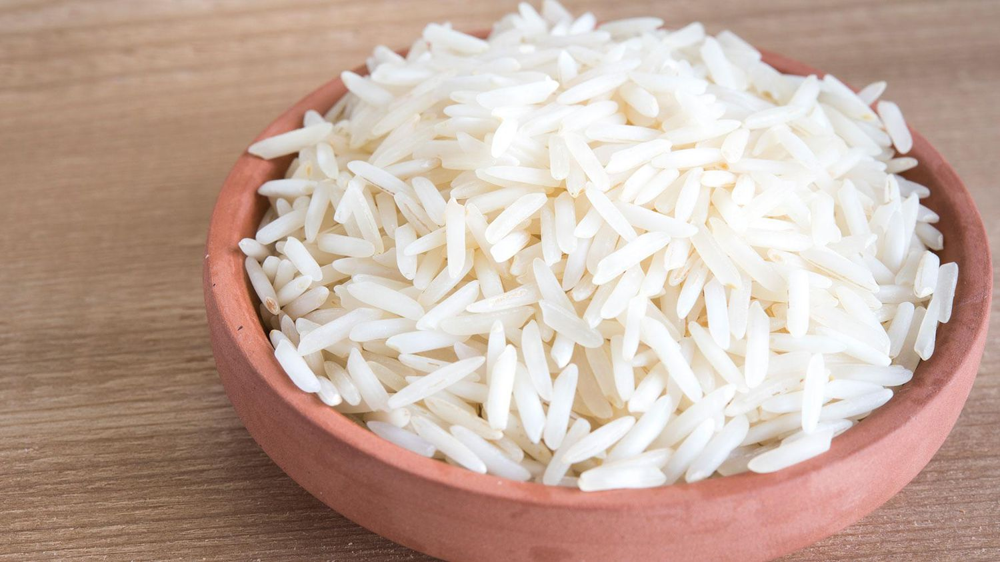

ARROZ BRANCO

Descrição
O arroz branco é um acompanhamento versátil e presente em muitas refeições. Simples de preparar, combina com carnes, legumes e molhos variados.
Esta receita ensina como fazer arroz branco soltinho, com poucos ingredientes e em poucos passos.
Ingredientes
- 1 xícara de arroz
- 2 xícaras de água
- 1 colher de sopa de óleo
- 1 dente de alho picado
- Sal a gosto
Passos
- Aqueça o óleo numa panela e doure o alho.
- Adicione o arroz e refogue por 1 a 2 minutos.
- Acrescente a água e o sal, misture e tampe a panela.
- Cozinhe em fogo baixo até a água secar.
- Desligue o fogo e deixe descansar por 5 minutos antes de servir.
Voltar ao Início